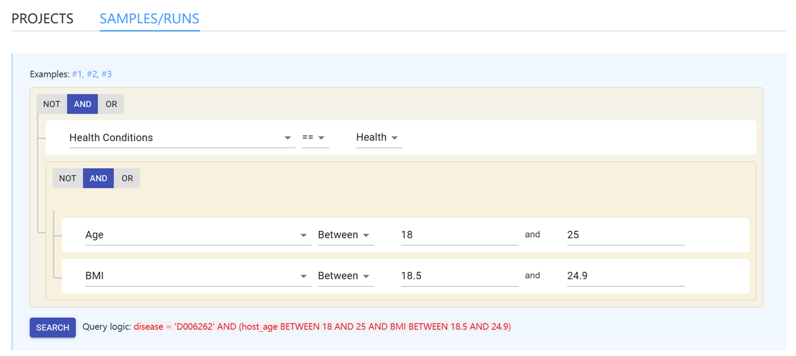
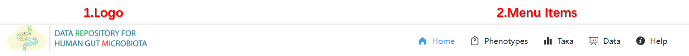

Website overview¶
The Main / Home page¶
The main containts of the home page contain two main sections:
1. brief summary of db contents¶
This sections contain:
- the main features of GMrepo
- main contents of the database and links to the corresponding pages.
2. a graphic data selector¶
A graphic data selector that allows users to construct complex queries to the projects and runs in our database. It consists of two selectors, one is dedicated for searching for samples/runs, the other is for projects.
Below is a screenshot of the selector:
.
The search logic is to find runs/samples that are:
- related to healthy individuals,
AND, - 18 to 25 years old,
AND, - with healthy BMI from 18.5 to 24.9.
See the Database usage section for details and more examples.
Header bar / navigation bar¶
The header bar is the most important widget of GMrepo.
It is fixed to the top so it is placed at the top of windows.
It plays two major roles, See the screenshot below:

1. Logo¶
It displays a logo of GMrepo. Users can click this logo and navigate back to the home page.
2. Menu items / navigation items¶
This section contains menu and sub-menu items that allow users to navigate through the main contents of GMrepo.
These (sub)menu items include:
- Home: navigate back to the home page.
- Phenotypes: mouse over or click to show two sub-menus:
- All phenotypes: go to the List of diseases and their associated gut microbes.
- Phenotype comparisons: contains a list of disease-health or disease-disease comparisons for which microbial markers have been identified.
- Taxa: contains two sub-menus:
- All taxa: list and characterisations of gut microbes at species and genus levels identified from all qualified samples;
- Marker taxa: list and distribution of marker taxa at species and genus levels identified from curated projects.
- Data: contains two submenus:
- All projects and runs: lists of projects, runs and related metadata,
- Curated projects: a list of curated projects.
- Help: link to this documentation.
Footer¶
The footer shows at the bottom of all pages and contains copyright information and links to
contact information,
Our latest publication.
Contact information¶
This database is a collaboration by: